About
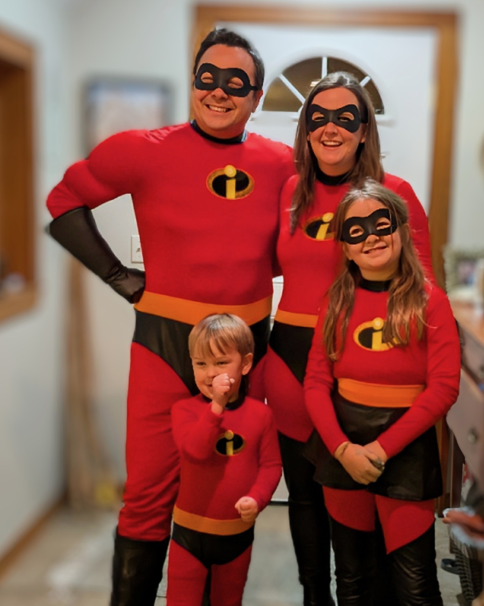
Andrew Christison
Port Angeles, Washington
I run a lifecycle marketing agency, build software, train martial arts, run long distances, and homestead with my family on the Olympic Peninsula.
Hello World.

Andrew Christison
Port Angeles, Washington
I run a lifecycle marketing agency, build software, train martial arts, run long distances, and homestead with my family on the Olympic Peninsula.
Hello World.
Things I’ve built
We make lifecycle marketing the channel your brand can’t believe it ever underinvested in.
ask a question about klaviyo. get an answer cited to the official docs.
what’s happening outside, right now. first of their kind nature MCPs.
What should I grow here? The API that answers for any US coordinate.

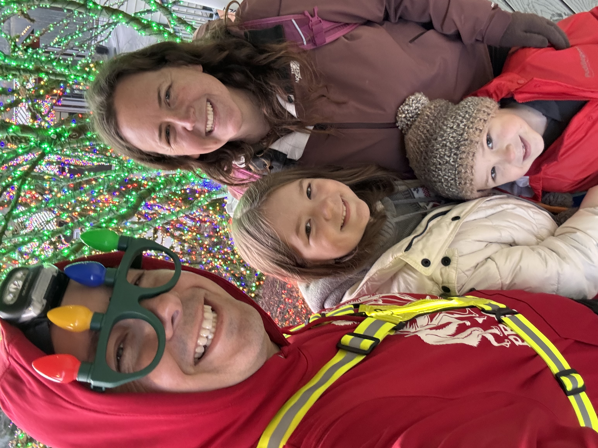


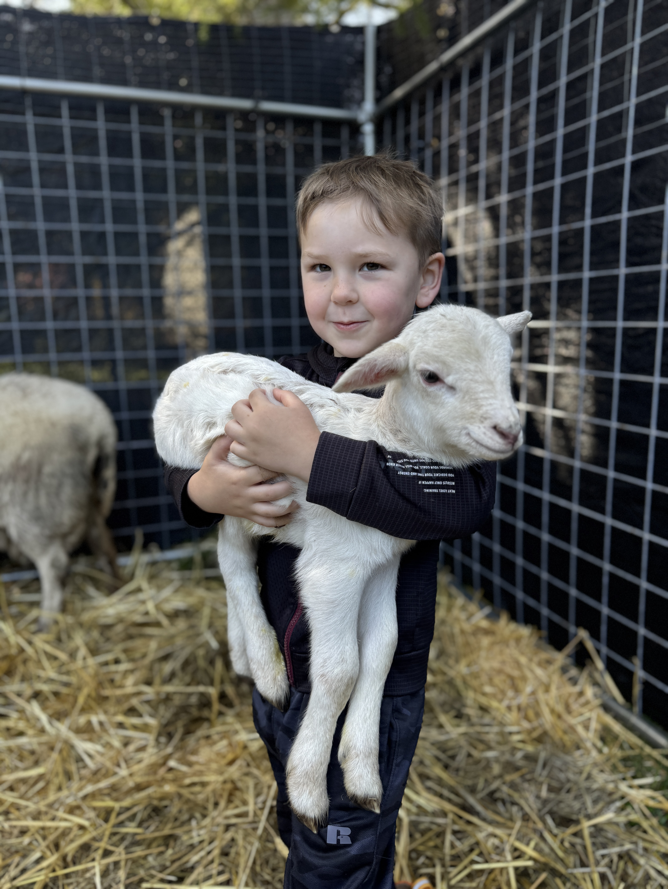
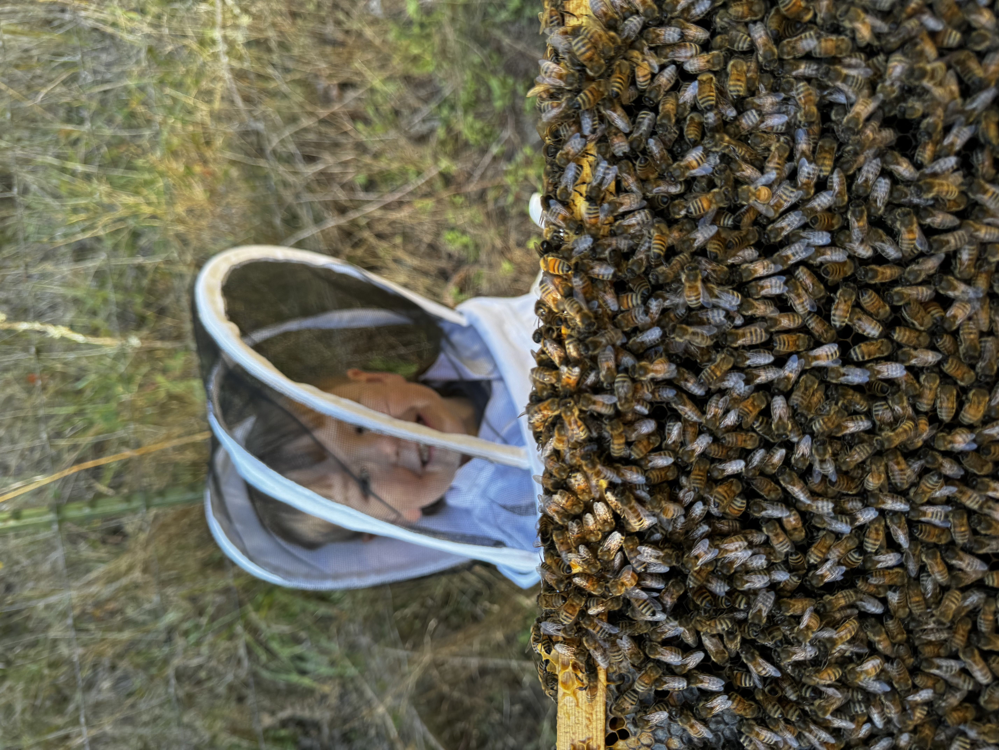

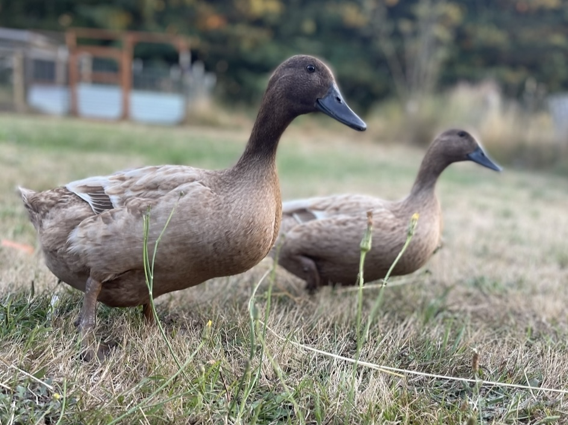
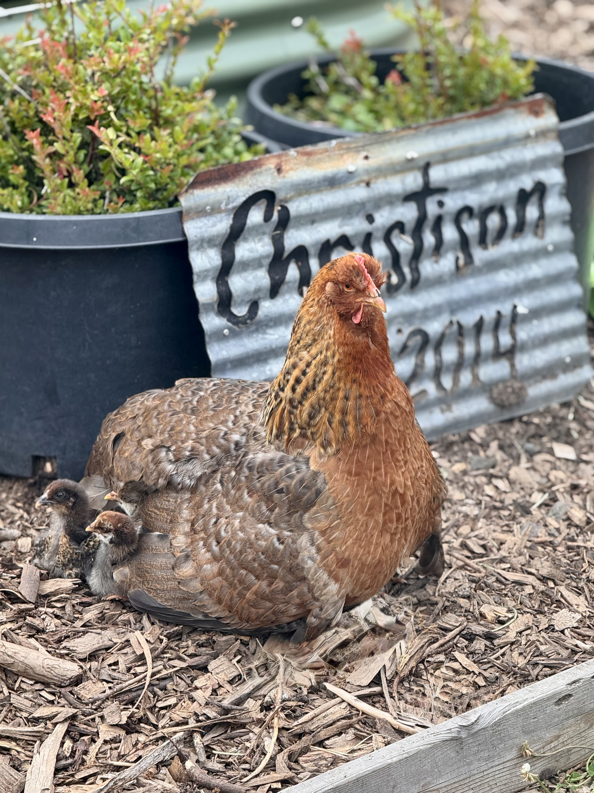
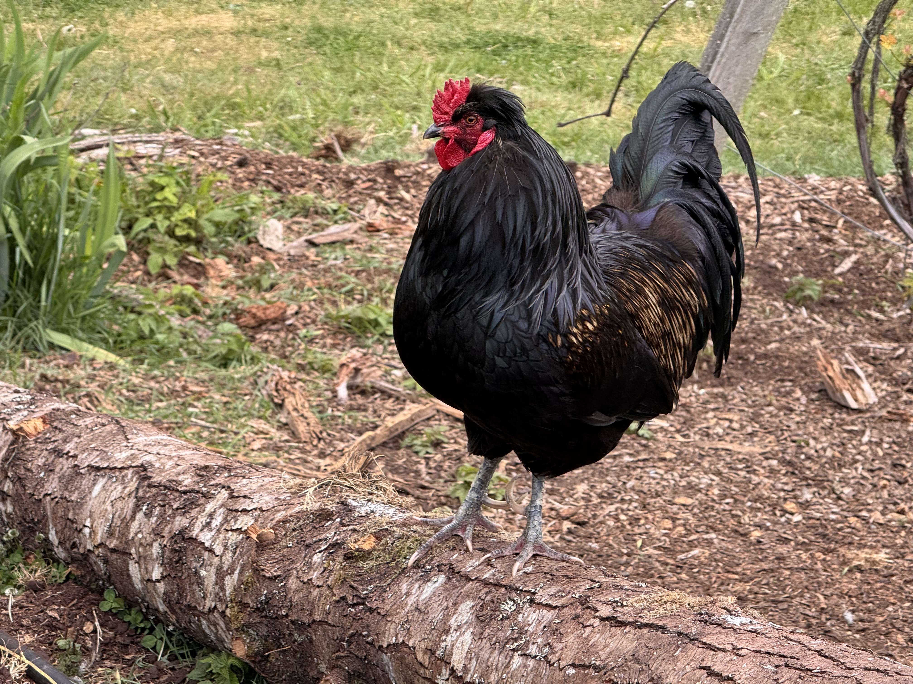
6.5 acres in the rainshadow of Olympic National Park.
Port Angeles. The land of fruit and honey.

A 2002 school bus, converted with love at Barry’s Garage, by the man, the legend, himself, Maisie, Megan and Andrew in 2018. Traveled into 2019.
And we still bussin’
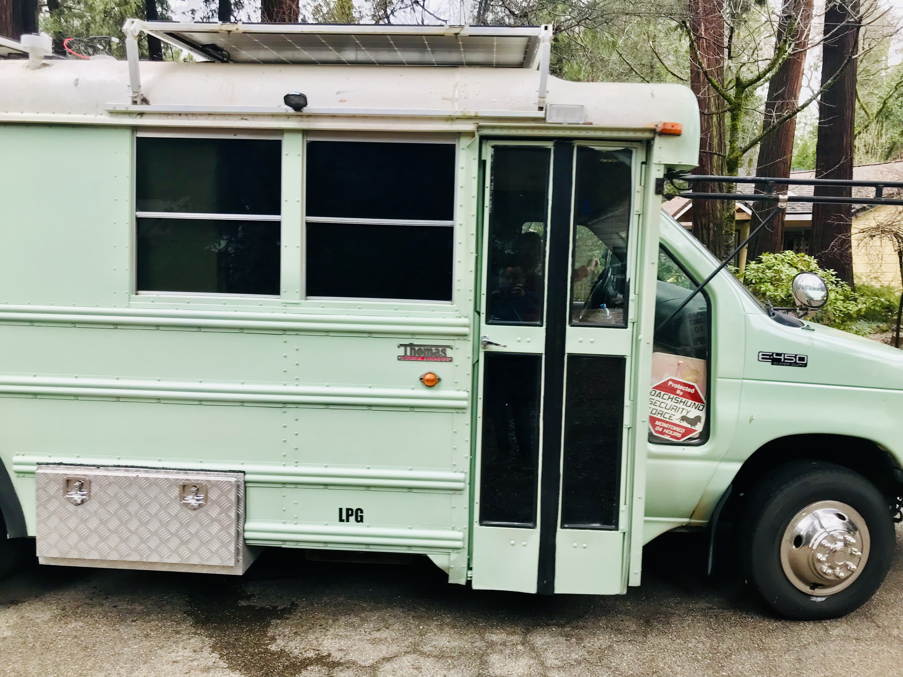
Things land here when they have somewhere to be.
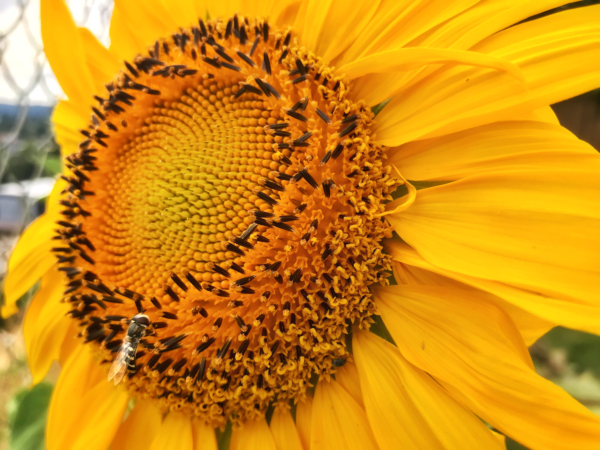
Homestead Sunflower, Shining Bright
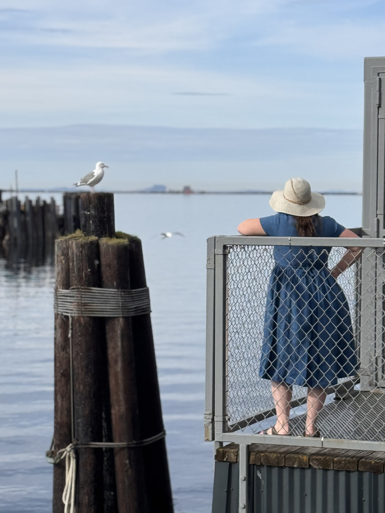
Megan at the Port Angeles Wharf
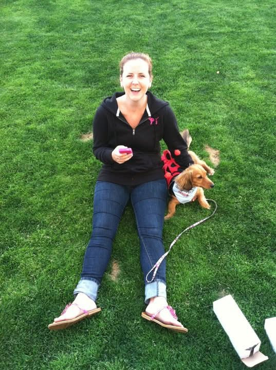
Megan & Trixie Breaking a Guinness World Record
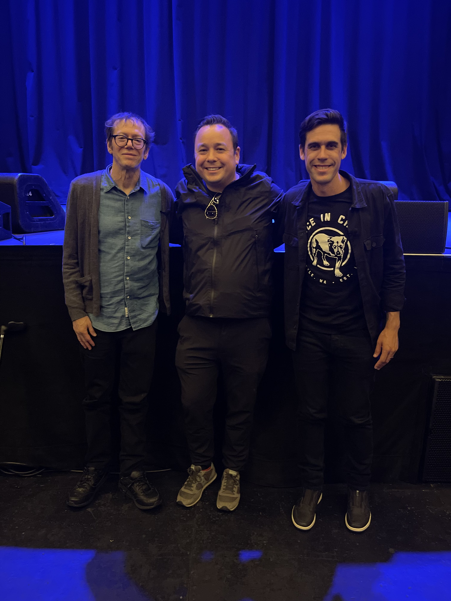
Ryan Holiday & Robert Greene, NY Times Best Selling Authors
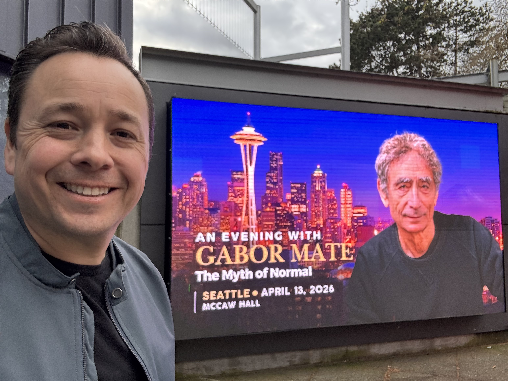
The Myth of Normal, Gabor Maté lecture
This is why we’re here.
Make today count.
1 item · the rest got composted
Type the name of a program, folder, document, or Internet resource, and andrewchristison.com will open it for you.
It looks like you're exploring someone's entire life. Would you like help?